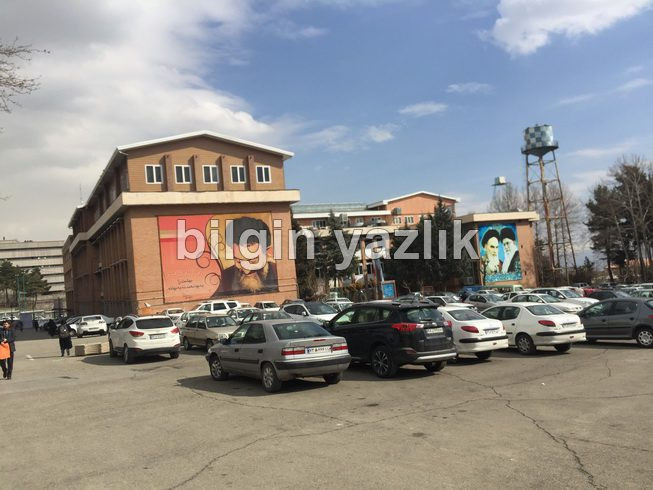
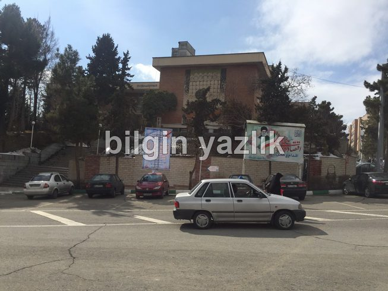
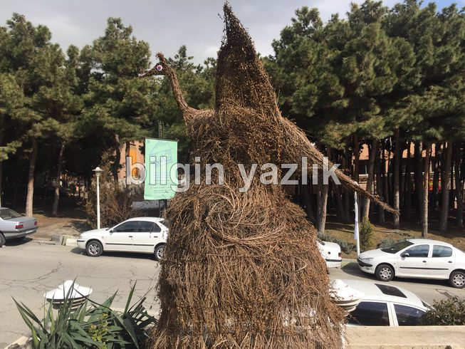
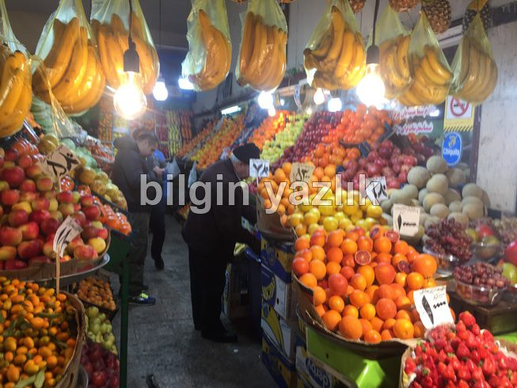
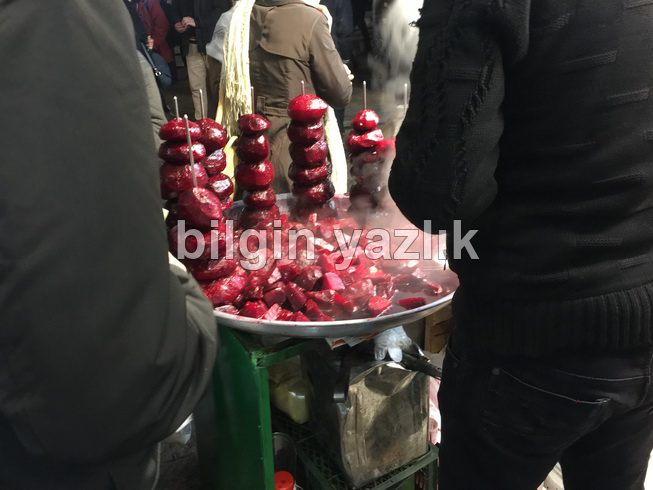
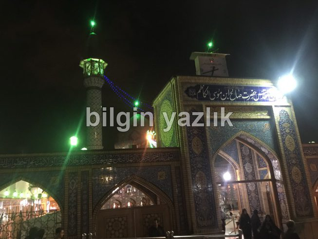
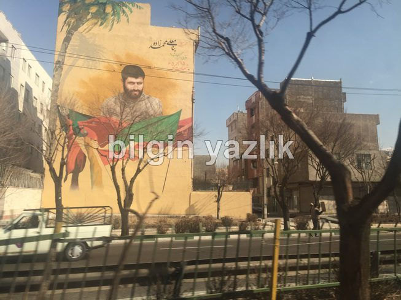
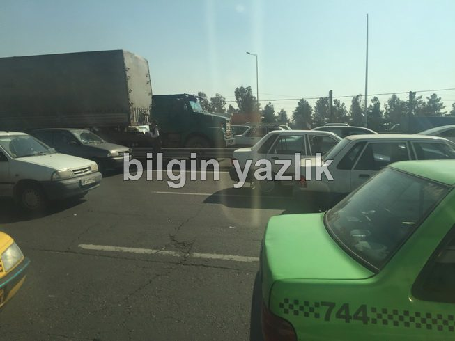

İran (Tahran) Seyahati
İran, hakkında pek de fazla bilgi sahibi olunmayan üstü örtülü bir şehir gibi. Çok fazla bilinmeyen içerdiği için seyahat öncesinde açıkçası bir tedirginlik yaşadım. Toplam 2 gün süren bir Tahran ziyareti gerçekleştirdim. Seyahatimden elde ettiğim deneyimleri burada sizlerle paylaşmak istiyorum.
İran’a uçak ile seyahat ettim, İmam Khomeini (Humeyni) hava alanına Türk Hava Yolları ile ulaştım. Bu hava alanı Tahran şehir merkezinin yaklaşık 60 km kadar dışında ve küçük bir hava alanı. İran uçak biletleri benzer mesafeli Avrupa uçuşlarına kıyasla oldukça pahalı. Hava alanında az sayıda insan bulunuyordu, İran’a rağbet olmadığı buradan dahi anlaşıldı. Hava alanından konakladığımız otele (Parsian Azadi Hotel) 1,5 saat gibi sürede otoyol üzerinden eriştik. İran ucuz bir şehir diyenlere sakın kanmayın, otelin gecelik ücreti 182 USD idi. Otel genel anlamda temiz ve konforlu sayılırdı, tavsiye ederim. Şimdi başlıklar halinde gözlerimlerimi aktaracağım:
1-Trafik, Ulaşım: Toplu taşıma çok az ve yetersiz, çok şeritli bir oto yol üzerinden ulaşım sağladık, ancak bu oto yol onlarca noktada başka yollarla birleşiyor ve hiçbir noktada trafik ışığı maalesef yok, var olan birkaç ışık ise sürekli sarı renkte yanıp sönüyor. Yani, trafik tam bir kaos ve müthiş sıkışık, her taraftan otomobiller çıkıyor ve hiç bir kural yok. Tahran’da araç kiralayıp gezmeyi bence unutun. Kullanılan araçlar çok eski, 1980-1990-2000 model araçlar. Araçların birçoğu sağdan soldan çarpılmış halde seyahat ediyor. Nadir de olsa güncel model araçlar da trafikte seyrediyordu. Trafik o kadar yoğun oluyor ki Tahran şehir merkezine 14 km mesafedeki bir uzaklıktan erişmek 2 saat sürüyor. Hava alanındaki ekranlardan gördüğüm kadarı ile İstanbul’dan daha batıya giden bir uçak yok idi. Ekrandaki 10 uçuştan 4’ünün de iptal edildiğini hatırlıyorum.
2-Para, Ticaret Hayatı: İran’ın resmi para birimi Riyal, ancak piyasada Tümen adı verilen ve 10 Riyale denk gelen para birimi kullanılıyor. Yaklaşık olarak 320.000 Riyal 1 TL iken 32.000 Tümen 1 TL oluyor. İran’da küresel bankalar ve kredi kartları geçersiz, bir yabancı olarak nakit dışında hiçbir şansınız yok. İran’da her yerde Tümen ve Dolar ile alışveriş yapılabiliyor, ancak Dolar alışverişlerinde sürekli kurlar arası dönüşüm yaparken kafa karışabiliyor, tavsiyem Tümen ile alışveriş yapmanız, bir dip not olarak konakladığımız otel Tümen kabul etmedi, sadece Dolar kabul etti. İran’da birçok noktada Dolarınızı Tümene dönüştürebilirsiniz, ancak TL burada geçmiyor ve dönüşüm için spesifik döviz ofisi aramanız gerekebilir. Fiyatlar kesinlikle düşük değil, Türkiye’dekine benzer fiyatlar gördüm. Pazarlık yapmadan alışveriş yapmamanızı öneriyorum, sürekli turist olduğunuz için yüksek fiyat söylüyorlar. Tecriş denilen bir yerel pazara gittik, burada yerel ürünler bulmak mümkün. Tripadvisor, booking gibi sitelerde az sayıda İran oteli var, buralardan yapılacak rezervasyonun vardığınızda ne kadar geçerli olacağını bilemiyorum. Otele girişte pasaportunuzu alıyorlar ve ancak çıkışta para ödedikten sonra iade ediyorlar.
3-Elektrik: Elektrik prizleri bizim kullandığımız prizler ile aynı, voltaj seviyesi de 220 V, yani herhangi bir dönüştürücü kullanmadan tüm elektrikli eşyalarınızı İran’da rahatça kullanabilirsiniz.
4-Toplum: Kadınların başı açık olarak gezmeleri kanunen yasak ve cezası var. Bu nedenle müslüman olsun ya da olmasın tüm kadınları ülkeye girdikleri anda başlarını şalla dahi olsa örtmeleri gerekiyor. Fakat başın üst kısmı açık olarak örtünmeye sorun çıkarmıyorlar, birçok İranlı kadının da bu şekilde örtündüğünü gördüm. İranlı kadınlar abartılı makyajlar yapıyorlar. Toplumu genel olarak yabancılara karşı güvensiz ve kapalı olarak değerlendirdim. Toplumda erkeklerin bariz bir biçimde baskın olduğunu söyleyebiliriz, kadınlar arka planda kalıyorlar. Toplantılar Kur’an tilaveti ve ardından milli marş ile açıldı, sunum yapan her İranlı sunumun başında Besmele ile başladı.
5-İnanç: İran’da resmi olarak Şii inancı hakim. Az sayıda camii gördüm ve bu camiler bizdeki camilerden biraz farklı idi. Burada günde 3 defa namaz kılındığını ve namaz kılma şekillerinin bizdekinden çok farklı olduğunu öğrendim. Ezanın da bizim bildiğimiz ezandan çok farklı olduğunu belirtelim.
6-Yemek: Yemek kültürleri bizim kültürümüze çok yakın, pilav çok tüketiyorlar ve farklı farklı pilavlar yapıyorlar. Yemeklerinde safran kullanıyorlar, kırmızı et ve tavuk bolca tüketiliyor. Yemeğin yanında ekmek yerine genelde pilav oluyor, kola bolca içiyorlar. Damak tatları bize çok yakın bu nedenle yemek konusunda sorun yaşanmayacaktır.
7-İnternet: İnternet çok yavaş (1 Megabit Download), birçok site yasaklı (facebook, twitter, milliyet vb.). Whatsapp kullanılabiliyordu.
8-İletişim: Roaming kapsamında GSM hatları İran’da çalışıyor.
9-Televizyon: Çanak anten yasakmış ancak çok yerde çanak anten kullanıldığını gördüm.
Özetle: Şehirleşme açısından Türkiye’nin 30 yıl önceki halini andıran bir şehir idi Tahran. Güvenli ve konforlu bir şehir olarak tanımlayamayız, tatil yapmak için gidilecek iyi bir destinasyon olduğunu da söyleyemeyiz.








Bu yazı taliyol arşivinden taşınmıştır. · özgün kayıt